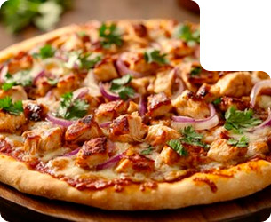

S
Pizza de pollo y cebolla caramelizada

4,8
Sacá los quesos de la heladera 15-20 minutos antes de usarlos. A temperatura ambiente, se derriten mejor y el sabor se intensifica.
Para lograr una textura más parecida a las pizzas tradicionales, podés usar una mezcla de harinas sin gluten, como 70% de harina de arroz y 30% de almidón de mandioca. Esto le da elasticidad a la masa.
S
4,8